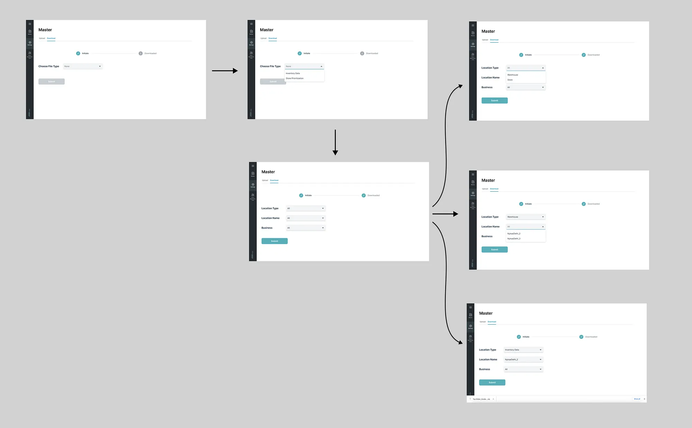
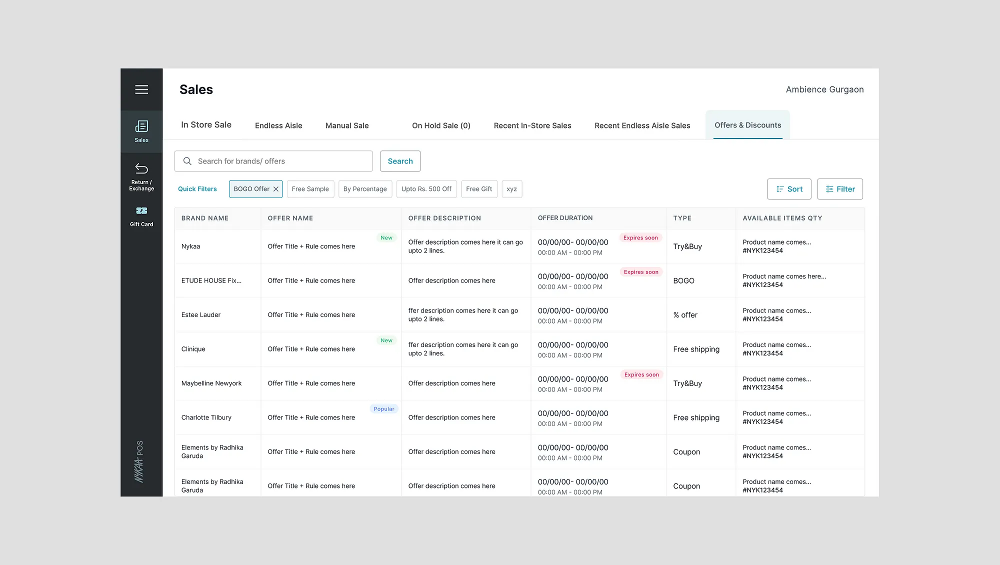
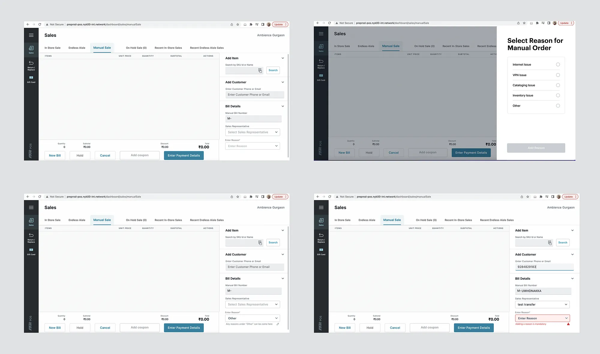

As a holistic product designer, I believe that creating seamless internal tools is just as crucial as building intuitive consumer-facing products. While user experience often focuses on the end consumer, the efficiency of internal tools determines how well a business operates behind the scenes. The right platforms and tools streamline management, reduce operational inefficiencies, and ultimately save time — allowing teams to focus on delivering a superior customer experience. During my time at Nykaa, I worked extensively on optimizing omnichannel business strategies — not just from a customer experience perspective but also by refining and enhancing the Point of Sale (POS) backend system used by store representatives, managers, and admins. The POS platform serves as the nerve center of in-store operations, and any inefficiency in its design can directly impact sales, inventory management, and customer satisfaction. Through data-driven insights and hands-on research with store teams, I identified key areas that required improvement and proposed significant enhancements to the POS platform, including:
1. Automatic Replenishment System
One of the biggest challenges in retail is maintaining optimal inventory levels. Store representatives often struggle with out-of-stock products, leading to lost sales opportunities. To solve this, I worked on an Automatic Replenishment System that predicts inventory needs based on sales patterns, ensuring timely restocking and reducing manual intervention. This system improved efficiency, cut down on order delays, and enhanced overall customer satisfaction by minimizing stockouts.
2. Offers and Discounts for In-Store SKUs on POS
One of the biggest challenges in retail is maintaining optimal inventory levels. Store representatives often struggle with out-of-stock products, leading to lost sales opportunities. To solve this, I worked on an Automatic Replenishment System that predicts inventory needs based on sales patterns, ensuring timely restocking and reducing manual intervention. This system improved efficiency, cut down on order delays, and enhanced overall customer satisfaction by minimizing stockouts.
3. Replacement Flow for SKUs on POS
Handling product replacements in-store was a cumbersome process for both customers and store staff. There was no clear system in place to efficiently swap out defective or incorrect items. I designed a Replacement Flow within the POS system, allowing store representatives to process exchanges seamlessly, track SKU movements, and ensure better inventory management. This enhancement resulted in a faster, frustration-free replacement process, leading to higher customer satisfaction and better accountability in stock management.
Objective:
Replicate Nykaa Beauty/Fashion E-Com’s existing replacement flow for retail stores.
Ensure that certain products can be replaced by either the same product or a similar product (in the case of fashion).
Avoid loss of sales at retail stores.
Create an easier experience for staff by consolidating the process into a single flow instead of managing both a return and a new sale.
Data for Current Returned Orders at Stores:
906/3.86L (0.2%) orders with returned items at Beauty retail stores in Q4 ‘21.
23L/117 Cr (0.2%) refunded amount at Beauty retail stores in Q4 ‘21.
4. Manual Order Flow on POS
Another key pain point for store teams was the lack of flexibility in processing manual orders for customers who wanted personalized assistance or unavailable SKUs. I introduced a Manual Order Flow feature that enabled store representatives to create custom orders, process payments, and even schedule deliveries for out-of-stock items directly from the POS system. This provided customers with a more personalized shopping experience while empowering store teams to handle special requests without friction. Problem to solve: Manual orders need to be reduced to almost zero. We need to start capturing reasons for manual orders so that we can resolve these issues through process, tech, etc.
The Power of Thoughtful Design in SaaS
What I learned through this process is that SaaS-driven internal tools are not just operational necessities — they’re strategic enablers. A well-designed POS system doesn’t just process transactions; it drives efficiency, improves customer interactions, and bridges the gap between online and offline experiences. These enhancements at Nykaa’s POS system were small but impactful steps in refining omnichannel retail. By focusing on both user experience and operational efficiency, we created a scalable, intuitive, and effective platform that benefitted store representatives and customers alike. For any product designer working in SaaS, the key takeaway is this: Internal tools deserve as much design thinking and attention as customer-facing products. When you optimize the backend, you empower the frontline.